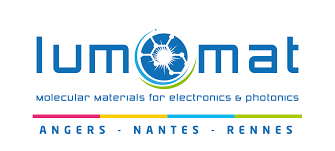
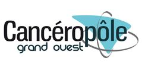
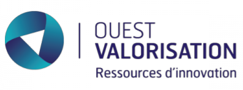
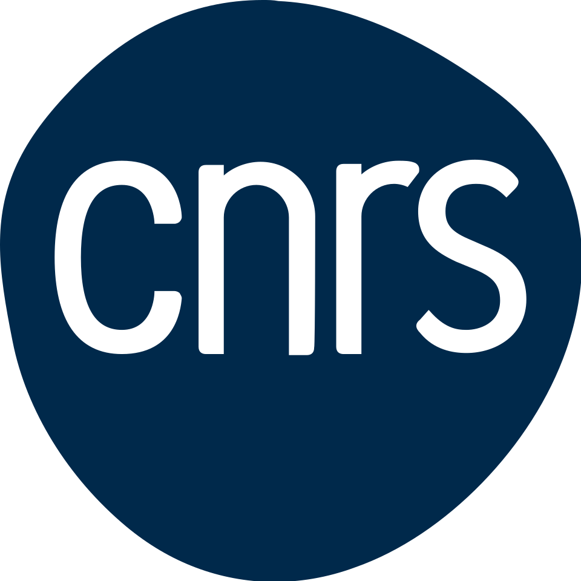
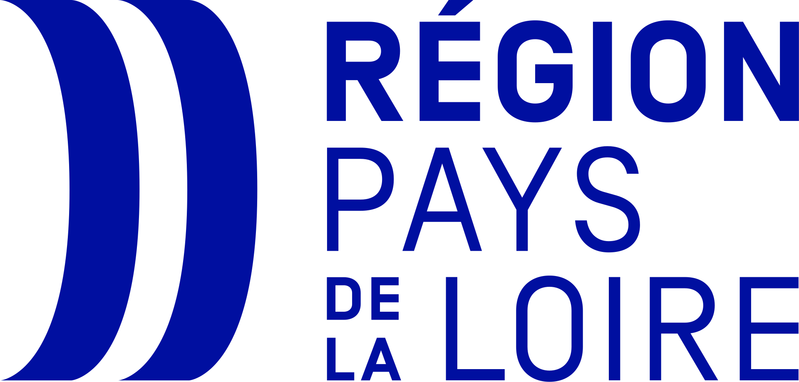

Research projects
Our projects aim to develop magnetically responsive nanoassemblies for biomedical applications, with a particular focus on magnetic hyperthermia, controlled drug delivery, multimodal therapy and liver diseases.
Current and recent funded projects

Development of magnetic and photoactive nanoassemblies for combined phototherapy. This project explores the association of magnetic nanoparticles with photosensitizers to design multimodal therapeutic platforms.

Development of magnetic nanomedicine strategies for liver cancer, with a focus on magnetic nanoassemblies and their interactions with hepatic cells.

Valorisation of curcumin-based magnetic nanoassemblies prepared by flash nanoprecipitation. The project supports the development of compact multicore nanoassemblies combining magnetic nanoparticles, hydrophobic active molecules and stabilizing polymers.

Study of magnetic coupling in three-dimensional nanoparticle assemblies, with the aim of understanding how collective magnetic behavior can enhance magnetic fluid hyperthermia.
Development of superferrimagnetic nanoassemblies based on iron oxide nanostructures for biomedical applications, including immune-related liver diseases.

International collaborations focused on magnetic nanocarriers, polymer-stabilized nanoassemblies and the development of multifunctional nanoplatforms for biomedical applications.
Scientific directions
- Combined phototherapy and magnetically activated nanoassemblies
- Control of magnetic interactions in multicore assemblies
- Magnetic nanomedicine for hepatic cancer
- Nanoassemblies for immune-mediated liver diseases
- International collaborations on polymer-stabilized magnetic nanocarriers